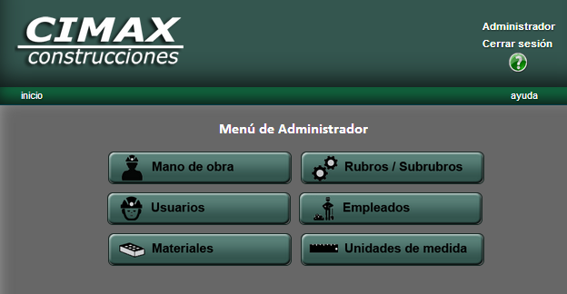

Menú Administrador
A continuación se presenta el menú correspondiente al usuario Administrador:

Daremos aquí una breve descripción de las opciones disponibles.
- Mano de Obra
A través de esta pantalla, usted podrá obtener una lista actualizada de la mano de obra disponible para usar en el resto del sistema. Podrá realizar alta de mano de obra, modificación de los datos de mano de obra existentes, y baja de mano de obra.
Para más información acerca de las operaciones relativas a mano de obra, usted podrá encontrar más ayuda en la página de mano de obra.
- Rubros/Subrubros
A través de esta pantalla, usted podrá agregar nuevos rubros a los rubros existentes, podrá editar la descripción, unidad de medida, lista de materiales y mano de obra relativa a un rubro. Asimismo, también podrá realizar el borrado de rubros.
Para más información acerca de las operaciones relativas a los rubros, usted podrá encontrar más ayuda en la página de rubros.
- Usuarios
A través de esta pantalla, usted podrá acceder a una lista actualizada de los usuarios que tienen acceso al sistema. Podrá realizar alta de usuarios, modificación de los datos de los usuarios existentes, y baja de usuarios.
Para más información acerca de las operaciones relativas a los usuarios, podrá encontrar más ayuda en la página de usuarios.
- Empleados
En esta pantalla, usted encontrará una lista actualizada de los empleados que fueron cargados en el sistema. Podrá realizar alta de empleados, modificación de los datos de los empleados existentes, y baja de empleados.
Para más información acerca de las operaciones relativas a los empleados, usted podrá encontrar más ayuda en la página de empleados.
- Materiales
En esta pantalla, usted encontrará una lista actualizada de los materiales disponibles para usar en el resto del sistema. Podrá realizar alta de materiales, modificación de los datos de los materiales existentes, y baja de materiales.
Para más información acerca de las operaciones relativas a los materiales, usted podrá encontrar más ayuda en la página de materiales.
- Unidades de medida
En esta pantalla, usted encontrará una lista actualizada de las unidades de medida disponibles para usar en el resto del sistema. Podrá realizar alta de unidades de medida, modificación de los datos de las unidades de medida existentes, y baja de unidades de medida.
Para más información acerca de las operaciones relativas a las unidades de medida, podrá encontrar más ayuda en la página de unidades de medida.